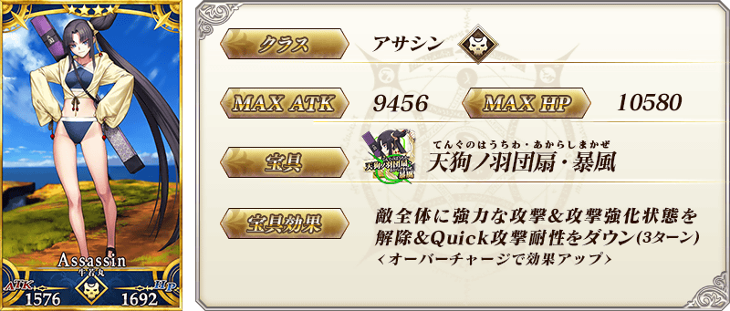
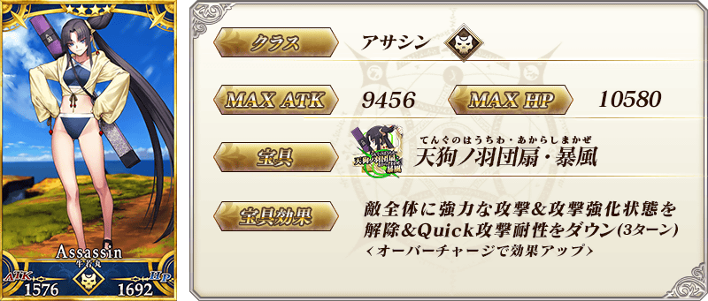
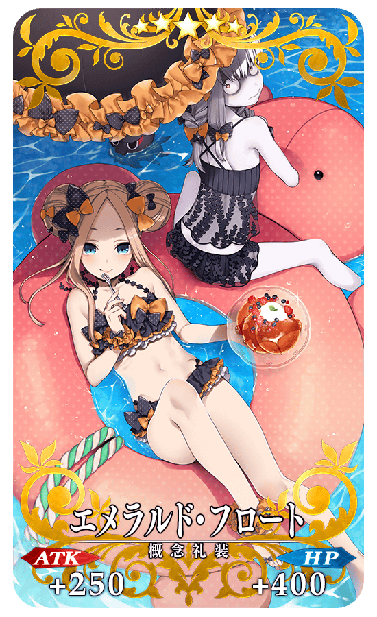
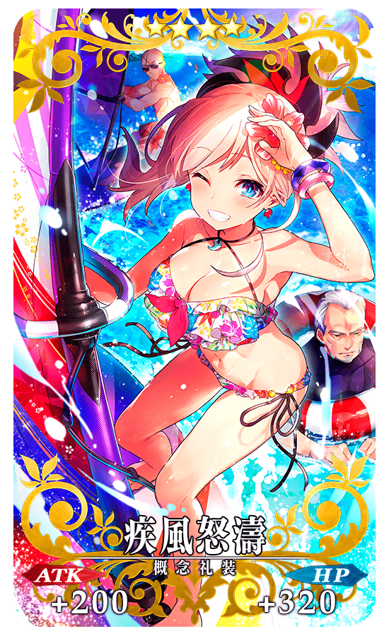
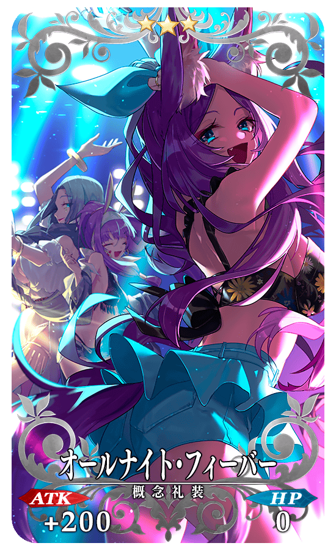

◆「復刻 從者★慶Pick Up1召喚(每日交替)」期間◆
期間:2019年7月17日(三) 17:00～8月3日(六) 11:59
舉辦期間限定「復刻 從者★慶Pick Up1召喚(每日交替)」！
變更在2018年舉辦的「從者★慶Pick Up1召喚(每日交替)」一部份內容進行復刻。
於期間限定活動「復刻:從者夏日慶！ 輕量版」活躍的期間限定從者「★5(SSR)貞德(Archer)」「★4(SR)茨木童子(Lancer)」「★4(SR)牛若丸(Assassin)」登場！
「★4(SR)茨木童子(Lancer)」「★4(SR)牛若丸(Assassin)」以每日交替Pick Up！
「★5(SSR)貞德(Archer)」常駐Pick Up。
詳情請在聖晶石召喚畫面左下的召喚詳細確認。
「★5(SSR)エメラルド・フロート」「★4(SR)疾風怒濤」「★3(R)オールナイト・フィーバー」做為期間限定概念禮裝登場！
裝備上述3種概念禮裝的話，在期間限定活動「復刻:從者・サマー・フェスティバル！ 輕量版」中會提升活動道具的掉落獲得數。
◆有關從者的注意◆
※「★5(SSR)貞德(Archer)」「★4(SR)茨木童子(Lancer)」「★4(SR)牛若丸(Assassin)」在Pick Up期間結束後不會追加到故事召喚。
※請注意「復刻 從者★慶Pick Up1召喚(每日交替)」做為每日交替，「★4(SR)茨木童子(Lancer)」「★4(SR)牛若丸(Assassin)」就算Pick Up期間中也會有不被抽出的日子。
◆有關概念禮裝的注意◆
※請注意會做為對象被抽出的期間限定概念禮裝只限「★5(SSR)エメラルド・フロート」「★4(SR)疾風怒濤」「★3(R)オールナイト・フィーバー」，其他的期間限定概念禮裝為抽出對象外。
※「★3(R)オールナイト・フィーバー」在Pick Up期間中，也能靠友情點數召喚獲得。
※請注意自友情點數召喚抽出的「★3(R)オールナイト・フィーバー」在自動變還設定登錄★3(R)概念禮裝的情況，會變成自動變還的對象。
Pick Up期間中，期間限定從者、期間限定概念禮裝的出現機率提升！
10次召喚中確定1張★4(SR)以上和確定1位★3(R)以上的從者！
※確定★4(SR)以上包含從者和概念禮裝。
※本頁面皆為開發中圖片。會有與實際圖片相異的情況。
◆「復刻 從者★慶Pick Up1召喚(每日交替)」Pick Up內容◆
| Pick Up期間 | Pick Up內容 | |
|---|---|---|
| 全天Pick Up | 每日交替Pick Up | |
| 7/17(三) 17:00～ 7/18(四) 22:59 |
★5 貞德(Archer) | ★4 茨木童子(Lancer) ★4 牛若丸(Assassin) |
| 7/18(四) 23:00～ 7/20(六) 22:59 |
★5 貞德(Archer) | ★4 茨木童子(Lancer) |
| 7/20(六) 23:00～ 7/22(一) 22:59 |
★5 貞德(Archer) | ★4 牛若丸(Assassin) |
| 77/22(一) 23:00～ 7/25(四) 22:59 |
★5 貞德(Archer) | ★4 茨木童子(Lancer) ★4 牛若丸(Assassin) |
| 7/25(四) 23:00～ 7/28(日) 22:59 |
★5 貞德(Archer) | ★4 茨木童子(Lancer) |
| 7/28(日) 23:00～ 7/31(三) 22:59 |
★5 貞德(Archer) | ★4 牛若丸(Assassin) |
| 7/31(三) 23:00～ 8/3(六) 11:59 |
★5 貞德(Archer) | ★4 茨木童子(Lancer) ★4 牛若丸(Assassin) |
※請注意會以每日交替變更Pick Up的從者。


 


|  |
★★★★★SSR
|

※為了改善識別性，「BB$鈔」的顏色從上次舉辦時變更。
|  |
★★★★SR
|

|  |
★★★R
|


介紹「★5(SSR)貞德(Archer)」「★4(SR)茨木童子(Lancer)」「★4(SR)牛若丸(Assassin)」的寶具演出！
在「Fate/Grand Order」官方網站內的公告中，以影片公開寶具演出，敬請確認。
其他還有，期間限定活動「復刻:從者夏日慶！ 輕量版」和期間限定「復刻 從者★慶Pick Up2召喚」同時舉辦！
關於詳情，請自下述橫幅確認。
■「復刻:從者夏日慶！ 輕量版」詳細情報

■「復刻 從者★慶Pick Up2召喚」詳細情報